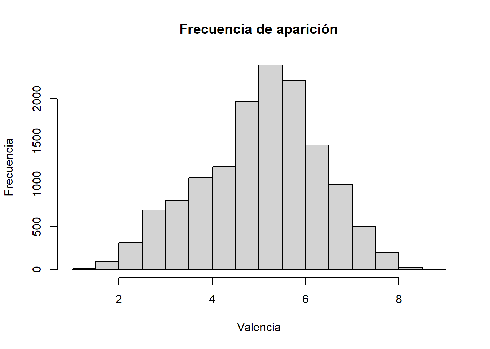
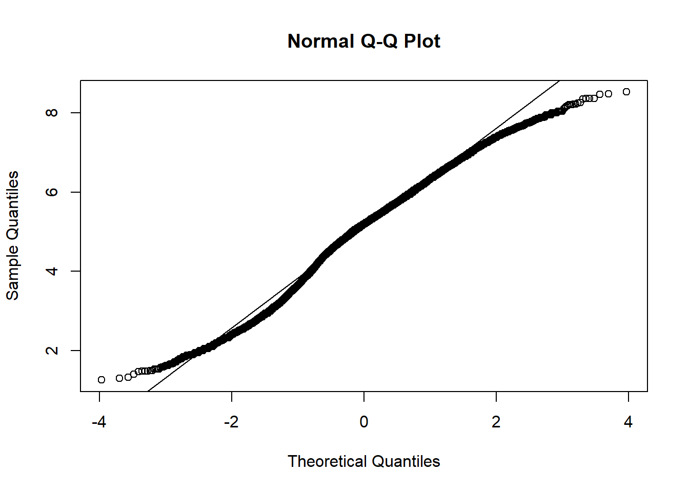

Estadística para Lingüistas
Estadística Descriptiva
head(arrange(valencias, Val)) Word Val
1 pedophile 1.26
2 rapist 1.30
3 AIDS 1.33
4 torture 1.40
5 leukemia 1.47
6 molester 1.48head(arrange(valencias, desc(Val))) Word Val
1 vacation 8.53
2 happiness 8.48
3 happy 8.47
4 christmas 8.37
5 enjoyment 8.37
6 fun 8.37Media
mean(valencias$Val)[1] 5.063847Mediana
median(valencias$Val)[1] 5.2Cuantiles
quantile(valencias$Val, 0.25) 25%
4.25 quantile(valencias$Val, 0.5)50%
5.2 quantile(valencias$Val, 0.75) 75%
5.95 summary(valencias$Val) Min. 1st Qu. Median Mean 3rd Qu. Max.
1.260 4.250 5.200 5.064 5.950 8.530 Medidas de dispersión
Rango
range(valencias$Val)[1] 1.26 8.53Varianza
La sumatoria del cuadrado de la desviación con respecto a la media dividido por el número de observaciones -1
(Levshina, 2015 p.48)
var(valencias$Val)[1] 1.625348Desviación típica (desviación estándar)
Es la raíz cuadrada de la varianza
sqrt(var(valencias$Val))[1] 1.274892sd(valencias$Val)[1] 1.274892Rango intercuartil (IQR)
Es la diferencia entre el tercero (75%) y primer cuartiles (25%)
IQR(valencias$Val)[1] 1.7hist(valencias$Val, main = "Frecuencia de aparición", xlab = "Valencia", ylab="Frecuencia")
Test de Shapiro
Una manera efectiva de determinar si los datos de nuestra variable están normalmente distribuidos, es usando un test. El test de shapiro asume la hipótesis nula de que la muestra proviene de una distribución normal.
shapiro.test(valencias$Val)Para datos con más de 5000 casos se aconseja la visualización de los datos con un diagrama de cuantiles:
qqnorm(valencias$Val); qqline(valencias$Val)